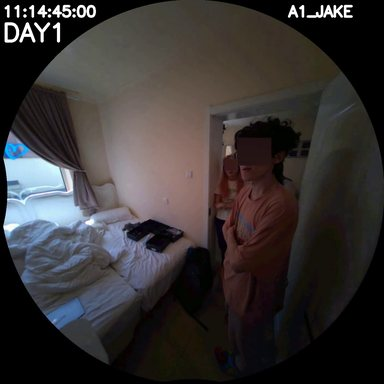

without spatial axis
3-axis (E + S + V)
0/3 correct
B
wrong-side outcome
gold is C · another box
Gist: R1 episodic: [DAY1 11:23:00 - DAY1 11:23:30] I hold the box with both hands, grab it back, set it upright, and close it. Shure say...
with spatial axis
4-axis (+ Spatial)
3/3 correct
C
correct target
C · another box
Gist: R1 spatial: (hard drive, on, dining_table) (box, on, another_box) (I, located_in, bedroom) (data, in, hard_drive)
[chunk not captured]trace not captured [[predicate]] spatial_triple at chunk DAY1 11:14:30: (box, on, another box)
agent evidence